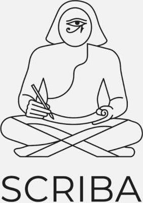
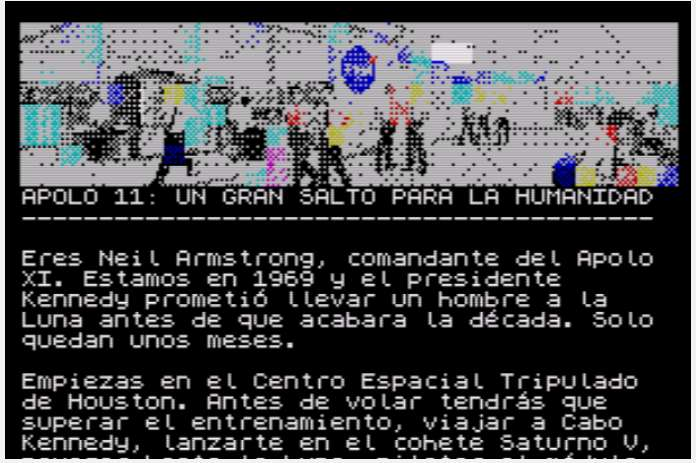
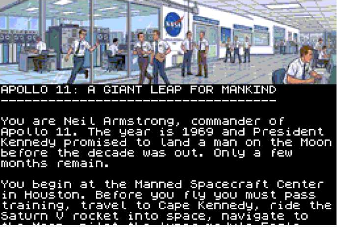
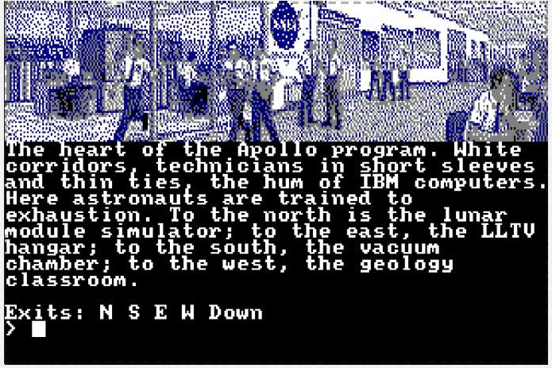
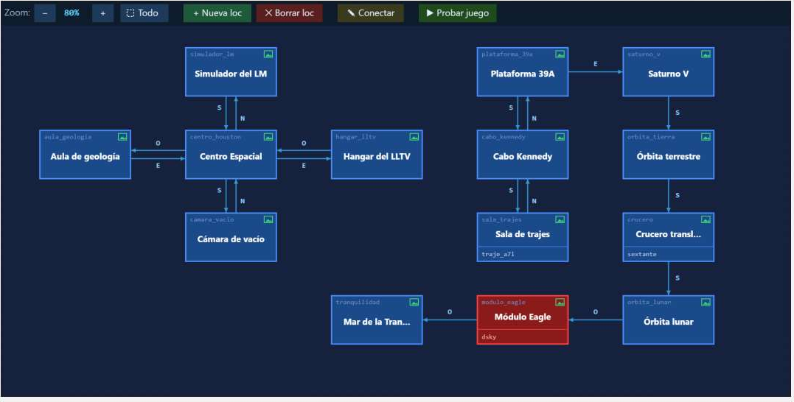
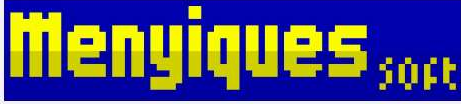

PUBLICIDADESistema multiplataforma de aventuras de textoVERSÃO 3.0 · OUTUBRO 2026
BASIC por fora.
ASM por dentro.

Escreve a tua aventura de texto uma vez e leva-a ao Spectrum, ao Amstrad, ao MSX2 e ao PC. Com editor visual, depurador e multilíngue de série.



ZX Spectrum 128K. Apolo 11, em espanhol.
ZX Spectrum Next. Imagens em Layer 2.
Amstrad CPC 6128. Modo 1, a 4 cores.
ASM nativo
A tua aventura corre sobre um motor nativo em código máquina Z80. Desde a 3.0, todas as máquinas saem do mesmo motor, compilado em Python puro.
- Música AY, efeitos FX e som WAV digitalizado
- No Next, Layer 2 e sem tocar na ROM
- Orçamento de memória em cada exportação
Condacts em BASIC
Se já escreveste BASIC, já sabes escrever condacts: ON, IF, THEN, ELSE, LET e PRINT, com variáveis e temporizadores.
REM El Faro
ON CAVAR AREIA
IF AT @praia THEN
LET _AREIA_CAVADA = 1
CREATE #chave @praia
PRINT "Aparece uma chave."
ENDIF
ENDONSete plataformas
Uma mesma base de dados, compilada para cada máquina e em cinco línguas: espanhol, catalão, inglês, francês e português.
| ZX Spectrum 48K | .TAP |
| ZX Spectrum 128K | .TAP |
| ZX Spectrum Next | .NEX |
| Amstrad CPC 6128 | .DSK |
| MSX2 | MegaROM |
| Amstrad PCW | disco |
| Windows | .EXE |
3.0
Novidadesdesta versão
- MSX2. Cartucho MegaROM, SCREEN 5 a 42 colunas e música pelo PSG.
- Amstrad PCW. Disco de arranque automático para 8256 e 8512, a 90×32.
- Motor nativo Z80 em todas as máquinas. Adeus, Boriel.
- CPC em Modo 1. 40 colunas e imagens de 4 cores em ZX0.
- 128K e Next. Texto, música e FX em bancos de memória.
- Windows. Um único .exe com o jogo lá dentro, cifrado.
- Importa DAAD. Abre jogos .ddb do DAAD 1 e 2 (8 bits) e converte-os para YAML, com a lógica.

O editor. Mapa arrastável de Apolo 11, com separadores de objetos, vocabulário, condacts e som. Testes no PC na hora, com depurador passo a passo.
Experimenta hoje. Junta-te ao canal.
t.me/ScribaAdventures
Um programa de Sergio Morales
